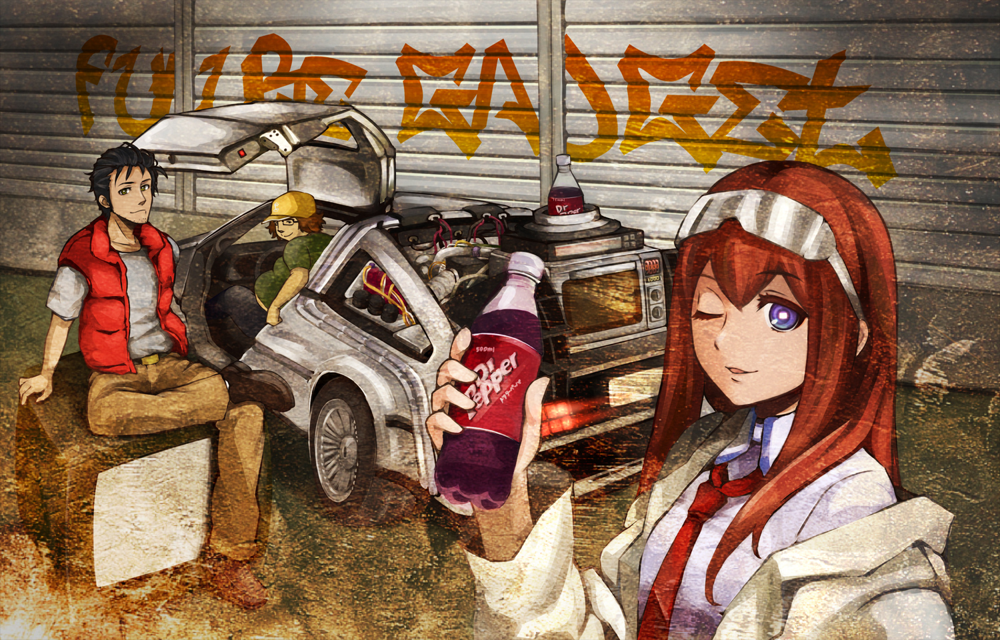

Despues de año y medio de desempleo (y quiza de ser un inutil) aparecio una idea
voy a programar un juego como MegaMan II
. Por supuesto, no tenia
ningun conocimiento de programacion (ni conputadora), solo tiempo y
patrocinadores
que gentilmente me proporcionaron un pc pentium 4 con un
monitor lcd de imagen difuminada aderesada por unas lineas misteriosas capaces
de disminuir la vida util de tus ojos 10 años (como la edad (minima) del pc,
coincidencia? no lo creo).
Asi dio inicio mi aventura ninja por el mundo de la programacion, el software libre y como yonki de internet.
Siguiendo la filosofia de crea una meta tan alta, que despues no puedas
cumplir
, no solo el juego deberia ser una maravilla, el codigo y cada elemento
que se utilizara deberia ser una obra de arte por si misma. Tras leer la
wikipedia y algunos foros elegi aprender C, una busqueda mas tarde tenia el
libro “Como programar en C/C++ y Java” (cuarta edicion) de Deitel & Deitel, en
bonito formato pdf salido de fotocopias.
Llego la flamante pc con un windows xp, intente ver que se podia hacer, como instalar algo, eclipse (lol), visual estudio (shame, shame, shame) y luego de una semana de llenar formularios que pedian mi correo, buscar cracks, uno o varios virus e intentar formatear, no podia tener mas odio hacia el engendro ese llamado windos, tanto que recorde que en un podcast bdsm un tecnico sado, decia entusiasmado algo de un sistema llamado linux, que su comunidad era una pasada y otras cosas.
Asi llego linux Mint, una instalacion fallida de ubunto (que suerte) y luego Debian. No olvidare esos reformateos fruto del desconocimento (en serio? si borras una particion deja de funcionar?).
Superada la instalacion (con visitas constantes al ocaso de desde linux
)…
Que? para aprender C debo apreder a usar un editor?
Que? para apreder C debo apreder a usar un compilador?
Que? para aprender a usar el compilador tengo que usar un terminal?
Que? para el terminal tengo que aprender a usar bash?
frustracion mucha, pero tambien diversion, pase tres meses obsesionado, estaba
aprendiendo como nunca, conoci vi, gedit, tambien gnome 2 (que pasada son los escritorios),
transmision, firefox, moc, … apt, aptitude, synaptic.
luego de medio aprender C, encontre un libro para programar videojuegos, el
Tutorial de libSDL para la programacion de videojuegos
de
Antonio Garcia Alba.
En realidad encontre muchos libros, pero este fue el mas decente y hasta el
momento el unico que he leido del tema. Son casi 700 paginas, creo que por el
empece a utilizar Emacs. Gran trabajo, aunque el
codigo no es lo mejor y como dice el titulo es mas un tutorial de SDL que un
libro de progracion de videojuegos, lo digo, por que cuando llega el momento de
programar el motor, termina abruptamente, te quedas desamparado y con mucho
codigo del que debes averiguar como demonios funciona.
aqui el libro y aqui su material.
perfecto no? no, el libro estaba en C++ y apenas era un novato en C
bueno que mas da? nahh, a aprender C++ y SDL (1.2) al mismo tiempo.
Tres meses mas tarde… medio sabia SDL, muy poco de C++, habia olvidado C, llegado al fin del libro y tenia un motor de videjuegos que no tenia ni idea de como modificar, menos corregir.
Otro mes mas tarde, habia reescrito (transcrito es mas correcto) todo el codigo, con algunos dibujos de como se conectaba cada componente.
Un par de meses despues tenia un videojuego al que nombre como INBO. El nombre
salio de un anime llamado Welcome to the NHK (NHK ni Youkoso!) donde un
hikikomori (nini) y un soñador se proponen hacer un videojuego, mientras el
mundo y las limitaciones mentales de los protagonistas paracen conspirar
(conspiracion ==> inbo) para que todo se vaya a la mierda, llamo a este
fenomeno vivir
.
(La imagen que inicia el post, coresponte a otro anime Stains;Gate tambien de mis preferidos, no encontre un fanart a la altura de NHK)
Y que paso con el videojuego? bueno, aqui esta lo mas importante, el icono (al final, no se utilizo, apenas se distinguia algo en 32x32 pixeles)
(es e.t.? un robot? ninja? lo dibujo un niño?)
La bienvenida
Menu
Una Captura
El editor
Exeptuando SDL y C++, el resto esta programado a mano, son como 5,000 lineas de codigo de mala calidad con muchos comentarios. Je, en aquel tiempo hacia una copia de cada modificacion, una version hasta tiene imagenes de fondo en lugar de tiles.
Entonces? El codigo es una basura, en realidad, ni sabia C++, ni C, ni tenia un libro al cual recurrir, tire todo, comence a documentar SDL y C en groff (man), regrese a C y me propuse no programar nada hasta que fuera un guru del lenguaje, aprender a hacer juegos sencillos como el tetris o la serpiente, documentar todo y de paso hacer un libro para que ningun tipo tubiera que ir por hay, hurgando en uno y otro libro, en busca del conocimiento para programar de cero a guru.
Despues llegaron los juegos en c con ayuda de ncurses y mas tarde, el empleo se apodero de mi vida un par de años y olvide como programar, luego el desempleo regreso por venganza y aqui estoy.
El empleo regresara? encontrare(/hare) un sistema de documentacion que cumpla con mis exigencias? algun dia sere un haker? o solo un juanker?
Nunca pense mostrar el codigo de INBO al munto, asi que nunca pase nada a git… aqui el codigo.
Este sitio carese de cualquier tipo de estadistica o registro, si el morbo le puede y no tiene nada que hacer:
- descomprimase
- instale SDL1.2 (image, ttf y mixer)
makey./test.
Las imagenes fueron hechas con inskape, el protagonista se basa en goku, los enemigos en nada, hay dos niveles mal echos, no recuendo de donde salieron los efectos/musica, la tipografia es una modificacion personalizada personal de otra tipografia y las teclas son
a==> saltos==> ataquex==> ataque especial (con la barra de vida en rojo)f==> entrar/salir a pantalla completaESC==> terminarRET==> regresar al menuINTRO==> selecionar
recuerdo el orgullo tras hacer que el motor liberara recursos o programar un scroll sin crasheos, tambien que el pc se moria cada ves que abria inskape o firefox!
Nos vemos, sin Software Libre, no tendria un pasatiempo, una coleccion de musica fantastica y seria mas estupido de lo que soy! Happy Hacking!